[6-8] 编码器接口测速 — 学习笔记
- 课程：江协科技《STM32入门教程-2023版 细致讲解 中文字幕》
- 视频：BV1th411z7sn?p=20，21:04（1264 秒）
- 素材：253 帧关键帧（每 5 秒，宽 1280px）+ PP-OCRv4 画面硬字幕 OCR（370 段）；关键截图 16 张随笔记收录（源图在
vidsum_out/stm32_p20/frames/，站内图片在assets/images/stm32-20/） - 字幕情况：该集 B 站没有 CC/AI 字幕，文本由画面烧录的中文字幕 OCR 得到（source=subtitle-ocr）；本集字幕里混入了大量 Keil Build Output（
Build Time Elapsed: 00:00:18、Load ... Project.axf、Flash Load finished at ...）与行首噪声，这些不是老师口述内容，已剔除，错字已按画面校正（清单见文末「存疑」）。 - 本集定位：这是定时器大节最后一部分（编码器接口）的代码课，也是模块 6 的最后一集——全片只写一个工程
6-8 编码器接口测速（由6-1 定时器定时中断工程复制改名，新建Encoder.c/Encoder.h模块）。理论（正交编码器、计数方向真值表、表77 三种模式、极性含义）全在上一集 P19 [6-7]，本集不重复推导；片尾 20:56「编码器接口测速的代码就写完了」直接结束，没有下一集预告。
一句话结论
本集把 [6-7] 的编码器接口理论写成一个完整工程：接线把旋转编码器的 A 相接 PA6、B 相接 PA7（查引脚定义表正是 TIM3_CH1 / TIM3_CH2，所以用 TIM3 的编码器接口；A/B 两根线可以交换、只影响正反转极性，但 PA6/PA7 不能随便换成别的引脚）→ 从 6-1 定时器定时中断 复制工程、新建 Encoder 模块 → 按六步写 Encoder_Init：① RCC_APB1Periph_TIM3 + RCC_APB2Periph_GPIOA 开时钟 ② PA6/PA7 配 GPIO_Mode_IPU 上拉输入 ③ 时基 ARR = 65536-1（满量程、方便换算负数）、PSC = 1-1（不分频，编码器时钟直接驱动计数器）④ TIM_ICInit 配两个通道、只留 TIM_Channel 和 TIM_ICFilter = 0xF（其余参数与编码器无关）⑤ TIM_EncoderInterfaceConfig(TIM3, TIM_EncoderMode_TI12, TIM_ICPolarity_Rising, TIM_ICPolarity_Rising)（定时器 / 编码器模式 / 通道 1 极性 / 通道 2 极性，一般用 TI12）⑥ TIM_Cmd(TIM3, ENABLE)。这里有个关键坑：TIM_ICInit 里的极性和 TIM_EncoderInterfaceConfig 的后两个参数配的是同一个寄存器，后配置覆盖前配置——所以要删掉 TIM_ICInit 里的极性行，并且 TIM_EncoderInterfaceConfig 必须写在 TIM_ICInit 之后。读数分三段演进：初版 uint16_t Encoder_Get(void){ return TIM_GetCounter(TIM3); }（现象：向右转一格 CNT 变 4——机械触点编码器一格内 A/B 各产生一个上升沿+下降沿共 4 次计数；向左转到 0 再减会反向溢到 65535、65534…）→ 转有符号：返回值改 int16_t（借补码特性）+ OLED_ShowSignedNum，0 之后直接显示 -1、-2…（实测 CNT:-0013）→ 测速版：int16_t Temp; Temp = TIM_GetCounter(TIM3); TIM_SetCounter(TIM3, 0); return Temp;（先读后清零，需要 Temp 缓存）。测速的闸门时间先是用主循环 Delay_ms(1000)（人手转得慢给 1s；速度单位就是脉冲个数/s，本集没有换算 RPM/每圈脉冲数），缺点是阻塞主循环；最终版改用现成的 1s 定时中断：定义全局 int16_t Speed，在 TIM2_IRQHandler 里 Speed = Encoder_Get(); 并清标志，主循环只快速刷新 OLED_ShowSignedNum(1, 7, Speed, 5)。改变方向的办法：A/B 两根线对调，或把任一通道极性从 Rising 改成 Falling（两个都反则方向不变）。
0. 本集定位：代码课，理论全部在 [6-7] P19
- 本集是纯代码课：0:02 第一句「接下来我们就来写一下编码器接口测速的代码」，0:12 看接线图；全程 Keil —— 看接线 → 复制工程 → 新建 Encoder 模块 → 逐行写
Encoder_Init→ 写Encoder_Get→ 编译下载 → OLED 看CNT/Speed。 - 本集只有一个程序 / 一个工程：
6-8 编码器接口测速（就是 P19 片头演示的那个成品工程）。 - 工程来源：从
6-1 定时器定时中断工程复制改名（图 3 的 main.c 里还能看到#include "Timer.h"、被注释的Timer_Init()、被注释的TIM2_IRQHandler模板）——这些留着后面测速用。 - 理论引用 P19 即可：正交编码器 A/B 90°、正转/反转的两张真值表、表77 三种模式、编码器模式下「极性=高低电平反相」，本笔记不再推导，只用结论，详细推导看
notes/stm32-19-编码器接口.md。 - 片尾没有预告（模块 6 最后一集），20:56「我们编码器接口测速的代码就写完了」直接结束。
1. 接线与工程准备
1.1 接线：A→PA6、B→PA7
- 接线和「外部中断那一节」（P12 旋转编码器计次）类似：把旋转编码器插在面包板左边；
- VCC 和 GND 接上电源正负极；
- 下面的 A 相输出接到 PA6、B 相输出接到 PA7。
- PA6 和 PA7 两个引脚可以交换：A 接 PA6、B 接 PA7，或者 A 接 PA7、B 接 PA6——都是可以的，只是正转和反转的极性不一样（方向反过来）。
- 但是 PA6 和 PA7 这两个引脚不能随便更换：查引脚定义表，PA6 和 PA7 分别就是 TIM3 的通道 1 和通道 2；本程序计划用 TIM3 接编码器，所以必须接在 PA6/PA7。其他定时器同理，都要按这张表接在对应 TIM 的 CH1 和 CH2 引脚位置。
- 面包板操作：编码器插好 → 跳线接 VCC（电源正）、GND（电源负）→ 两根飞线，A 相接 PA6、B 相接 PA7。
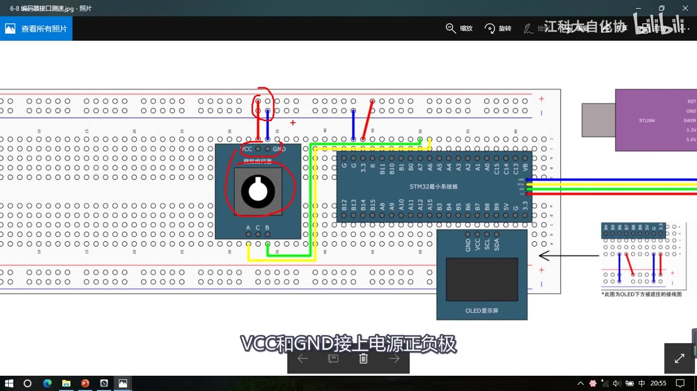
图 1：接线图 6-8 编码器接口测速——旋转编码器模块在面包板左侧，VCC/GND 接电源正负极（红圈），A/B 两相用两根线接到 STM32 的 PA6/PA7；右侧是 ST-Link 与 OLED
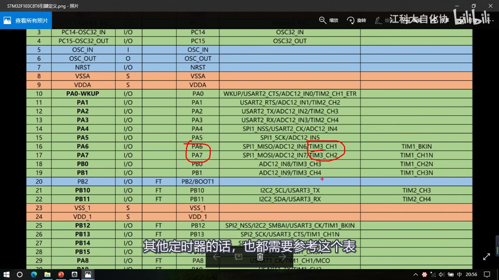
图 2：引脚定义表——第 16 行 PA6 的复用功能里有 TIM3_CH1、第 17 行 PA7 有 TIM3_CH2（红圈）；字幕「其他定时器的话，也都需要参考这个表」
1.2 复制工程、新建 Encoder 模块
- 回到工程文件夹，从
6-1 定时器定时中断的代码基础上写，复制后改名为6-8 编码器接口测速； - 打开 main.c：把原来的代码先注释掉；定时中断这部分也先注释掉——「我们等会儿还会使用」；先编译一下，
0 Error(s), 0 Warning(s)没问题。 - 在
Hardware处右键新建模块，名字叫Encoder，存放路径加上\Hardware；头文件写固定部分、C 文件加一个 stm32 头文件，然后写初始化函数void Encoder_Init(void)。
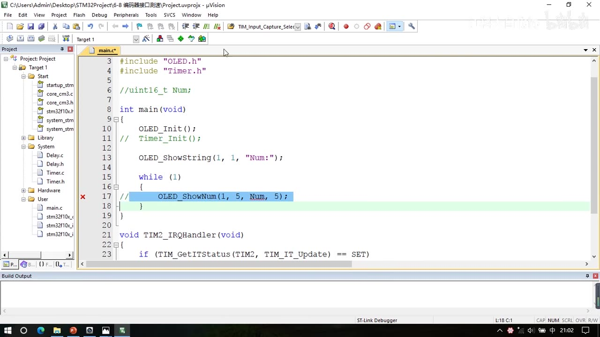
图 3：复制后的 main.c——标题栏是 6-8 编码器接口测速；#include "Timer.h"、Timer_Init() 被注释、OLED_ShowString(1, 1, "Num:")，下方是 void TIM2_IRQHandler(void) 模板（此帧刚复制完、还没注释；口述 2:23 说要把它注释掉，后续帧里已注释、测速时再解除）
2. 写代码前先理清六步
先看 PPT 的「编码器接口基本结构」图（理论见 P19），把流程理一遍：
| 步 | 做什么 | 本集要点 |
|---|---|---|
| ① | RCC 开启时钟（GPIO + 定时器） | TIM3 在 APB1、GPIOA 在 APB2 |
| ② | 配置 GPIO 为输入模式 | PA6/PA7 上拉输入 |
| ③ | 配置时基单元 | 预分频一般选不分频；ARR 给最大 65535——只需要 CNT 执行计数就行了 |
| ④ | 配置输入捕获单元 | 只有「滤波器」和「极性」这两个参数有用，后面的参数（分频器、数据选择器）与编码器无关 |
| ⑤ | 配置编码器接口模式 | 直接调一个库函数 |
| ⑥ | TIM_Cmd 启动定时器 |
电路初始化完成 |
- 初始化完成后：CNT 会随着编码器旋转而自增自减；
- 测位置：直接读出 CNT 的值就行；
- 测速度和方向：每隔一段固定的闸门时间取出一次 CNT、再把 CNT 清零——这就是测频法测量速度（P17 的思路，加了方向）。
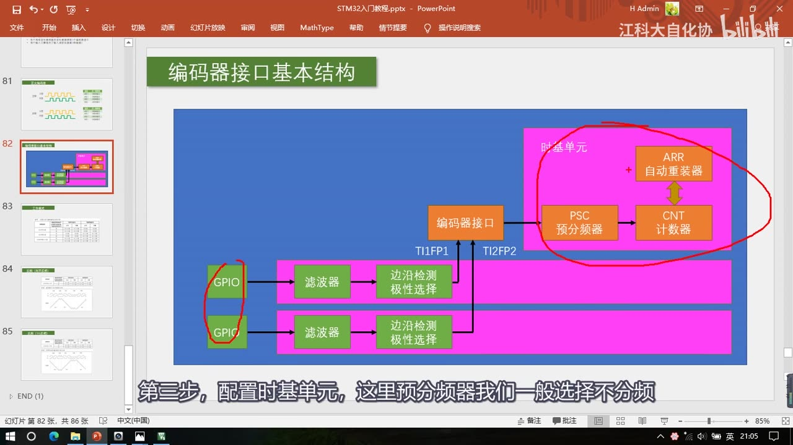
图 4：PPT「编码器接口基本结构」——红圈圈出「时基单元」里的 PSC 预分频器与 CNT 计数器、以及两路 GPIO；字幕「第三步，配置时基单元，这里预分频器我们一般选择不分频」
- 本小节需要新学的库函数只有一个：
TIM_EncoderInterfaceConfig（定时器编码器接口配置）——它的参数依次是：定时器、编码器模式、通道 1 极性、通道 2 极性。「其他函数我们就不需要再了解了」。
3. Encoder_Init 完整代码
#include "stm32f10x.h"
void Encoder_Init(void)
{
/* ① 时钟：TIM3 在 APB1、GPIOA 在 APB2 */
RCC_APB1PeriphClockCmd(RCC_APB1Periph_TIM3, ENABLE);
RCC_APB2PeriphClockCmd(RCC_APB2Periph_GPIOA, ENABLE);
/* ② GPIO：PA6、PA7 上拉输入 */
GPIO_InitTypeDef GPIO_InitStructure;
GPIO_InitStructure.GPIO_Mode = GPIO_Mode_IPU;
GPIO_InitStructure.GPIO_Pin = GPIO_Pin_6 | GPIO_Pin_7;
GPIO_InitStructure.GPIO_Speed = GPIO_Speed_50MHz;
GPIO_Init(GPIOA, &GPIO_InitStructure);
/* ③ 时基单元：ARR 满量程、PSC 不分频 */
TIM_TimeBaseInitTypeDef TIM_TimeBaseInitStructure;
TIM_TimeBaseInitStructure.TIM_ClockDivision = TIM_CKD_DIV1;
TIM_TimeBaseInitStructure.TIM_CounterMode = TIM_CounterMode_Up; // 编码器模式下无作用
TIM_TimeBaseInitStructure.TIM_Period = 65536 - 1; // ARR
TIM_TimeBaseInitStructure.TIM_Prescaler = 1 - 1; // PSC
TIM_TimeBaseInitStructure.TIM_RepetitionCounter = 0;
TIM_TimeBaseInit(TIM3, &TIM_TimeBaseInitStructure);
/* ④ 输入捕获单元：两个通道只配滤波器（极性删掉，由编码器接口函数统一配） */
TIM_ICInitTypeDef TIM_ICInitStructure;
TIM_ICStructInit(&TIM_ICInitStructure);
TIM_ICInitStructure.TIM_Channel = TIM_Channel_1;
TIM_ICInitStructure.TIM_ICFilter = 0xF;
TIM_ICInit(TIM3, &TIM_ICInitStructure);
TIM_ICInitStructure.TIM_Channel = TIM_Channel_2;
TIM_ICInitStructure.TIM_ICFilter = 0xF;
TIM_ICInit(TIM3, &TIM_ICInitStructure);
/* ⑤ 编码器接口模式：TI1、TI2 都计数，两个通道都不反相 */
TIM_EncoderInterfaceConfig(TIM3, TIM_EncoderMode_TI12, TIM_ICPolarity_Rising, TIM_ICPolarity_Rising);
/* ⑥ 启动定时器 */
TIM_Cmd(TIM3, ENABLE);
}
3.1 时钟与 GPIO：上拉输入的选择原则
- 开时钟：第一步开时钟，TIM3、GPIOA 没问题（TIM3 是 APB1 外设，所以用
RCC_APB1PeriphClockCmd）。 - GPIO：用的是 PA6 和 PA7，所以
GPIO_Pin = GPIO_Pin_6 | GPIO_Pin_7，初始化 GPIOA，模式选GPIO_Mode_IPU（上拉输入）。 - 三种输入模式（上拉/下拉/浮空）怎么选：
- 看接在这个引脚的外部模块输出的默认电平：外部模块空闲默认输出高电平 → 选上拉输入（默认输入高电平）；默认输出低电平 → 选下拉输入（默认输入低电平）——和外部模块保持默认状态一致，防止默认电平「打架」；
- 一般来说默认高电平是一个习惯的状态，所以上拉输入用得比较多；
- 如果不确定外部模块输出的默认状态，或者外部信号输出功率非常小，这时就尽量选择浮空输入——浮空输入没有上拉电阻和下拉电阻去影响外部信号（不过外部输入信号弱时，输入可能会受噪声干扰、来回不断地跳变）。
3.2 时基单元：ARR 满量程、PSC 不分频
TIM_InternalClockConfig没用了（最终代码里已删掉）：编码器接口会托管时钟——编码器接口就是一个带方向控制的外部时钟，所以这个内部时钟就没有用了（留着也不起作用）。TIM_CounterMode这个参数目前也是没有作用的：因为计数方向也是被编码器接口托管的。ARR给65536 - 1（满量程）：这样计数的范围是最大的，而且方便换算为负数（见 4.3/4.4 的补码）。PSC改成1 - 1（预分频给 0，就是不分频）：这样编码器的时钟直接驱动计数器（再来一个边沿就计一个数）。
3.3 输入捕获单元：只留滤波器
- 看 PPT：输入捕获单元并没有全部使用到——编码器接口只使用了通道 1 和通道 2 的「滤波器」和「极性选择」，所以只需要配置这两部分的参数；
- 结构体里后面的参数（分频器、数据选择器）与编码器无关，「留着也行，只是它们目前没有作用」；
- 参数删掉后结构体配置是不完整的，为了防止结构体里出现不确定值造成问题，先用
TIM_ICStructInit给结构体赋一个初值（「加个 StructInit 也是提醒一下我们」）； - 然后配通道 1：
TIM_Channel_1+TIM_ICFilter = 0xF+TIM_ICInit；再把通道号改成TIM_Channel_2、同样再TIM_ICInit一次——TIM_ICInit之后结构体已经写入寄存器了，所以同一个结构体改个值可以继续用，不用重新定义。 - 关于极性参数：上一小节说过，这里的「上升沿」并不代表上升沿有效（编码器接口始终是上升沿、下降沿都有效），「上升沿」参数代表的是高低电平极性不反转——对应 PPT 里 TI1/TI2 是否反相：给上升沿就是不反相、给下降沿就是反相。
- 但这个极性参数等会儿配置编码器接口时也有（属于重复配置），所以最终代码里把
TIM_ICInit的极性行删掉了，只留下滤波器和通道号。
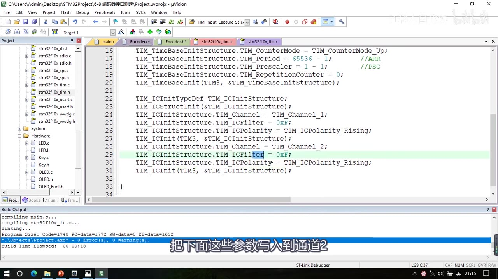
图 5：Encoder.c 时基与输入捕获部分——TIM_Period = 65536 - 1; //ARR、TIM_Prescaler = 1 - 1; //PSC；两个通道 TIM_Channel_1 / TIM_Channel_2 都只配 TIM_ICFilter = 0xF（这一行高亮），TIM_ICPolarity 行此时还在、后面会被删掉；字幕「把下面这些参数写入到通道2」
3.4 编码器接口模式：TIM_EncoderInterfaceConfig
TIM_EncoderInterfaceConfig(TIM3, TIM_EncoderMode_TI12, TIM_ICPolarity_Rising, TIM_ICPolarity_Rising);
四个参数（图 6 完整可见）：
| 参数 | 取值 | 含义 |
|---|---|---|
| 第 1 个：定时器 | TIM3 |
用哪个定时器的编码器接口 |
| 第 2 个：编码器模式 | TIM_EncoderMode_TI1 / TIM_EncoderMode_TI2 / TIM_EncoderMode_TI12 |
仅在 TI1 计数 / 仅在 TI2 计数 / TI1、TI2 都计数（对应 P19 表77 的三种模式）；一般用 TI12（两个边沿都计数，精度最高） |
| 第 3 个：通道 1 极性 | TIM_ICPolarity_Rising / TIM_ICPolarity_Falling |
Rising = 不反相；Falling = 反相 |
| 第 4 个：通道 2 极性 | 同上 | 同上，可按实际情况配置 |
- 「这里的这个极性，等会儿我们配置编码器接口的时候也有，属于重复配置了」——所以要用后面这个函数来统一配极性。
3.5 坑：极性重复配置与函数顺序
TIM_ICInit里的极性、和TIM_EncoderInterfaceConfig的后两个参数，配置的其实是同一个寄存器——属于重复配置，后配置的参数会覆盖前面的参数。- 所以：把前面
TIM_ICInit里的极性参数删掉，只使用TIM_EncoderInterfaceConfig来配置极性； - 但一定要注意顺序：
TIM_EncoderInterfaceConfig必须位于TIM_ICInit的下面，否则就是TIM_ICInit覆盖 Encoder 函数的配置（方向配置就白配了）。 - 改完之后，
TIM_ICInit的参数就只剩一个滤波器还有用了。
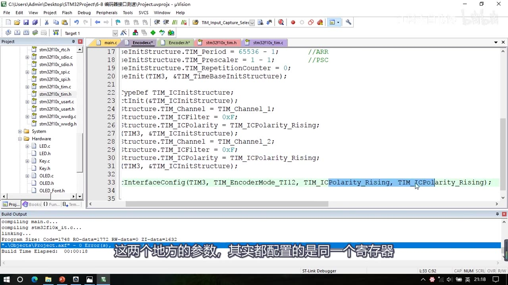
图 6：编码器接口配置——TIM_EncoderInterfaceConfig(TIM3, TIM_EncoderMode_TI12, TIM_ICPolarity_Rising, TIM_ICPolarity_Rising); 四参数完整可见（高亮），上方是 TIM_ICInit 两通道；字幕「这两个地方的参数，其实都配置的是同一个寄存器」
3.6 启动定时器
- 最后
TIM_Cmd(TIM3, ENABLE);——这样初始化配置就结束了；调用一下Encoder_Init()，编码器旋转就能控制 CNT 自增自减了。
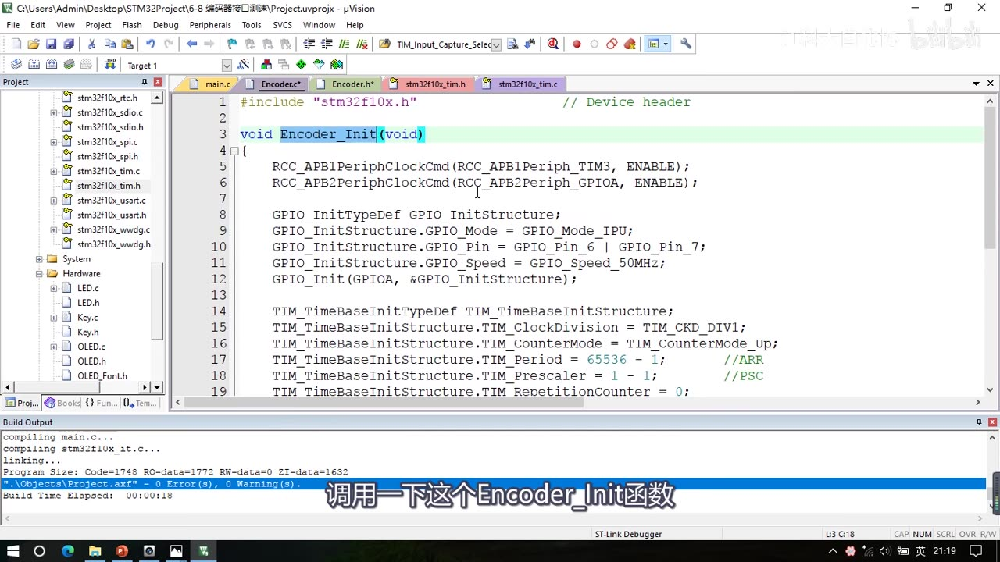
图 7：Encoder.c 开头（Encoder_Init 前半）——RCC_APB1PeriphClockCmd(RCC_APB1Periph_TIM3, ENABLE);、RCC_APB2PeriphClockCmd(RCC_APB2Periph_GPIOA, ENABLE);、GPIO_Mode_IPU、GPIO_Pin_6 | GPIO_Pin_7、GPIO_Speed_50MHz、TIM_Period = 65536 - 1; //ARR、TIM_Prescaler = 1 - 1; //PSC；字幕「调用一下这个 Encoder_Init 函数」
4. 读计数：初版 Encoder_Get
4.1 初版 Get 与主函数
uint16_t Encoder_Get(void)
{
return TIM_GetCounter(TIM3);
}
- 写完把
Encoder_Init和Encoder_Get都放到头文件声明。 - main.c 里：显示字符串改成
"CNT:"，主循环解除注释、不断显示Encoder_Get()的值：
OLED_Init();
Encoder_Init();
OLED_ShowString(1, 1, "CNT:");
while (1)
{
OLED_ShowNum(1, 5, Encoder_Get(), 5);
}
4.2 现象：向右转一格 CNT 变 4
- 下载后显示
CNT是 0；向右转一下编码器，可以看到值变成 4。 - 原因：这个编码器是有「段落感」的（机械触点式），每转一格它输出的波形是：A 相产生一个低电平脉冲、B 相产生一个相位差 90° 的脉冲（提前还是滞后取决于正转还是反转；连续转动就和 PPT 的波形一样）。
- 所以转动一格，A、B 相各出现了一个下降沿和上升沿，计次总共加了 4 次。
- 注意：如果你用的是电机的编码器（霍尔/光栅），就不会有这个段落感了，计数取决于实际脉冲。
- 继续往右转，CNT 继续自增；往左转，CNT 自减。
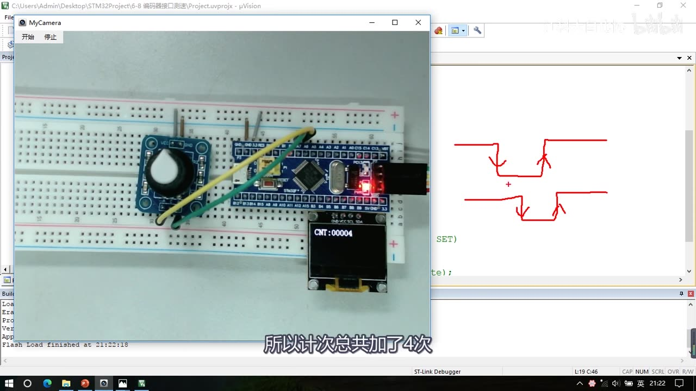
图 8：初版现象——OLED 显示 CNT:00004（向右转一格、计次加了 4 次），右侧红笔画的是 A/B 两相的波形（各一个上升沿+下降沿）；字幕「所以计次总共加了4次」
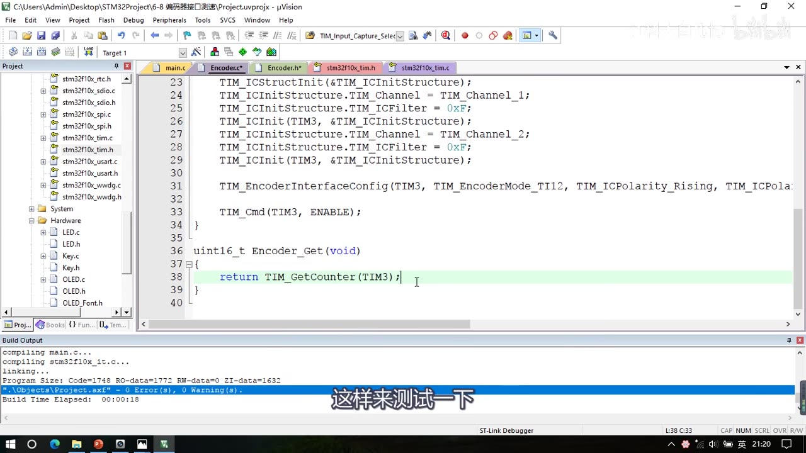
图 9：初版 Encoder_Get——uint16_t Encoder_Get(void) { return TIM_GetCounter(TIM3); }（高亮），上方是 TIM_EncoderInterfaceConfig(TIM3, TIM_EncoderMode_TI12, ...) 与 TIM_Cmd(TIM3, ENABLE)；字幕「这样来测试一下」
4.3 现象：向左转到 0 再减，会溢出到 65535
- 实验：向左转到 0 之后再向左转，0 再自减，计数器就反向溢出、回到自动重装值 65535，然后继续往下减：65535、65534……
- 原因：
Encoder_Get返回的是uint16_t（16 位无符号数），所以 0 减 1 就变成了 65535。
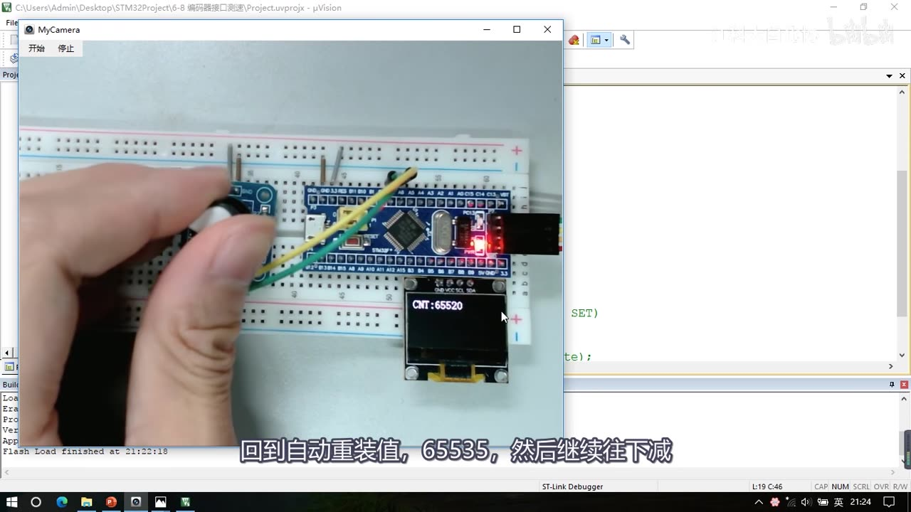
图 10：反向溢出——OLED 显示 CNT:65520（左转到 0 后再减，回到 65535 附近继续往下减）；字幕「回到自动重装值，65535，然后继续往下减」
4.4 转有符号：把 uint16_t 转成 int16_t
- 如果想要 0 之后变成 -1，直接把
uint16_t类型强制转换成int16_t就行了； - 两种做法（视频都说了）：可以直接把
OLED_ShowNum改成OLED_ShowSignedNum（这个函数内部也做了类型强转）；还是在Encoder_Get里转换——函数的返回值直接换成int16_t，函数声明也别忘了改，主循环里改成ShowSignedNum，这样就能显示负数了。 - 最终写法（
Encoder_Get的返回类型改掉）：
int16_t Encoder_Get(void)
{
return TIM_GetCounter(TIM3);
}
- 现象：向右转数值自增、向左转数值自减，变成负数后继续自减（实测画面
CNT:-0013）。 - 原理：这就是借用补码的特性、快速完成负数转换的小技巧——65535 当成有符号数看就是 -1、65534 是 -2……（P19 讲过）。
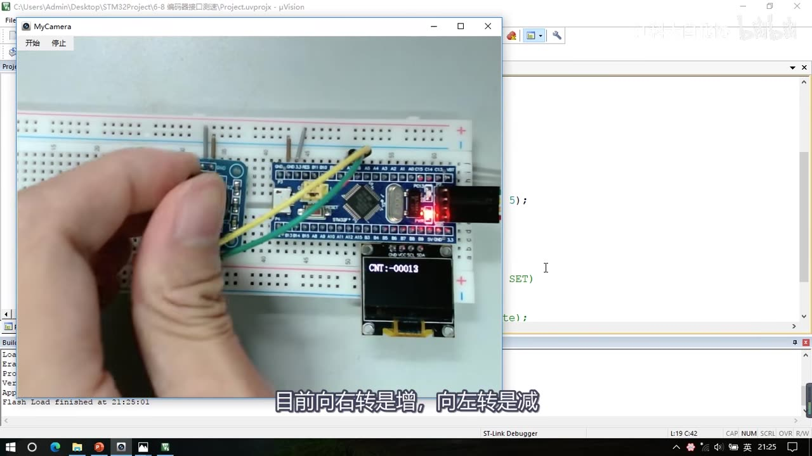
图 11：转有符号后的现象——OLED 显示 CNT:-0013（0 以下正常显示负数）；此时字幕「目前向右转是增，向左转是减」
4.5 方向反了怎么办
- 目前是向右转是增、向左转是减；如果这个方向和想要的不一致，可以改极性：
- 硬件层面：把 A、B 相两根线换一下，增减方向就可以反过来；
- 软件层面：修改两个输入通道的极性——把任意一个极性反转一下，方向就会反过来；如果两个极性都反转，那极性还是保持不变。
- 演示：把第一个
TIM_ICPolarity_Rising改成TIM_ICPolarity_Falling，下载后发现向右是增、向左是减（极性又反转过来了）。 - 到这一步，这个代码其实是**「编码器测量位置」**——需要测位置就直接
TIM_GetCounter读出来。
5. 测速：闸门时间 + 读后清零
5.1 测速版 Encoder_Get
- 想用编码器测速，就要在固定的闸门时间读一次 CNT、然后把 CNT 清零（P19 的测频法思路）。
- 要求读完后清零 CNT，所以要先定义一个临时变量缓存：
int16_t Encoder_Get(void)
{
int16_t Temp;
Temp = TIM_GetCounter(TIM3); // 先读
TIM_SetCounter(TIM3, 0); // 后清零
return Temp;
}
- 因为要先读取后清零，所以需要用
Temp缓存一下——这是这段代码的逻辑要点。
5.2 闸门 1s：先用的 Delay_ms(1000)
- 在主循环里每隔一段时间
Get一次，所以下面给一个Delay_ms(1000)； - 因为人手转比较慢，所以闸门时间就给 1s；如果是电机飞速旋转的话，闸门时间就可以给短点。
- 此时 CNT 的值就代表速度，单位是「脉冲个数 / s」。
- 现象：向右慢速转，速度是正数、比较小；快速转，正数比较大；向左转，速度是负数、比较小；快速转，负数比较大。
- 注意：本集没有换算 RPM、也没有讲「编码器每圈多少个脉冲」——单位就是脉冲个数/s；如果接的是编码电机，可以实际接电机的编码器试试（现象一样，但要把闸门时间弄短点）。
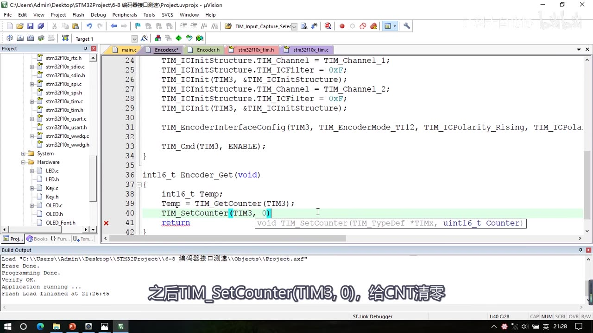
图 12：测速版 Encoder_Get——int16_t Temp; Temp = TIM_GetCounter(TIM3); TIM_SetCounter(TIM3, 0); return ...（TIM_SetCounter 那行高亮）；字幕「之后 TIM_SetCounter(TIM3, 0)，给 CNT 清零」
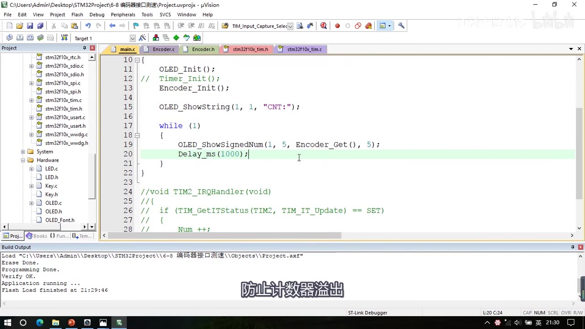
*图 13：Delay 闸门版主函数——OLED_ShowString(1, 1, "CNT:")、主循环里 OLED_ShowSignedNum(1, 5, Encoder_Get(), 5);，下面 Delay_ms(1000);（高亮）；字幕「防止计数器溢出」*
5.3 改进：改用现成的 1s 定时中断（最终版）
- 缺点：目前是直接通过
Delay实现闸门时间——如果主程序没有其他东西还行，但如果有其他东西，最好就不要在主循环加入过长的Delay，这样会阻塞主循环的执行。 - 比较好的方法：用 main.c 里留了这么久的定时中断（
6-1 定时器定时中断工程带过来的）：- 上面
Timer_Init()解除注释；「这里定时中断目前是每隔 1s 执行一次，你可以修改定时中断的时间来调整闸门时间」； - 在前面定义一个全局变量
int16_t Speed;； - 在定时中断
TIM2_IRQHandler里执行Speed = Encoder_Get();——每隔 1s 读取一下速度、存到 Speed 变量里； - 主循环就可以快速刷新显示
Speed了，Delay可以删掉，这样就不会阻塞主循环运行； - 前面的字符串也改成
"Speed:"，下面显示数字的位置往后挪两格、改到第 7 列。
- 上面
int16_t Speed;
int main(void)
{
OLED_Init();
Timer_Init();
Encoder_Init();
OLED_ShowString(1, 1, "Speed:");
while (1)
{
OLED_ShowSignedNum(1, 7, Speed, 5);
}
}
void TIM2_IRQHandler(void)
{
if (TIM_GetITStatus(TIM2, TIM_IT_Update) == SET)
{
Speed = Encoder_Get();
TIM_ClearITPendingBit(TIM2, TIM_IT_Update);
}
}
- 注意：
Timer_Init()里定时中断的「1s」配置本集没有展示（直接沿用 6-1 模板），这里只写「1s 更新中断」这个事实，具体的 PSC/ARR 见 P14 笔记。
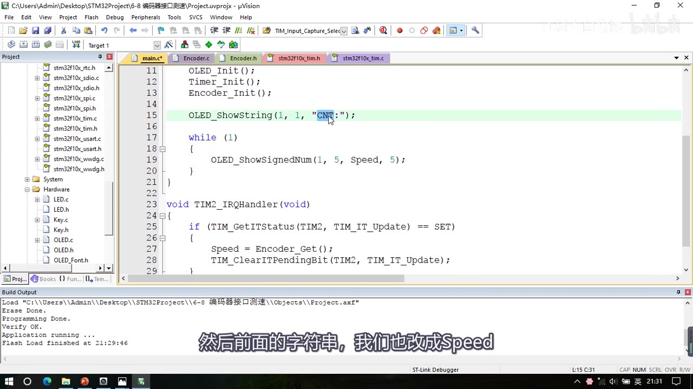
图 14：定时中断版改造中的 main.c——OLED_Init(); Timer_Init(); Encoder_Init();、OLED_ShowString(1, 1, "CNT:")（正在改 Speed），主循环 OLED_ShowSignedNum(1, 5, Speed, 5);；下方 void TIM2_IRQHandler(void) 里 if (TIM_GetITStatus(TIM2, TIM_IT_Update) == SET) { Speed = Encoder_Get(); TIM_ClearITPendingBit(TIM2, TIM_IT_Update); }；字幕「然后前面的字符串，我们也改成Speed」
6. 最终主函数与现象
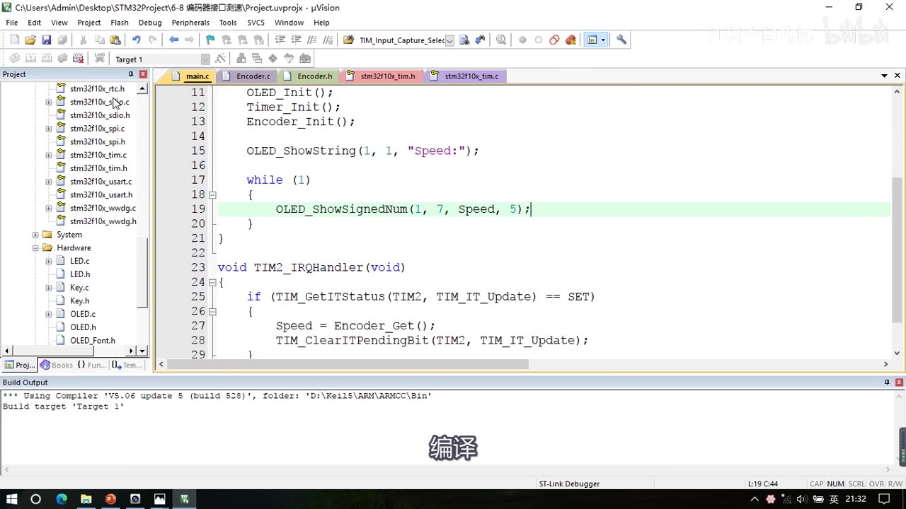
图 15：最终主函数——OLED_ShowString(1, 1, "Speed:")、主循环 OLED_ShowSignedNum(1, 7, Speed, 5);（高亮），TIM2_IRQHandler 里 Speed = Encoder_Get(); + 清标志；字幕「编译」
- 最终现象：OLED 显示
Speed:±——向右旋转是正的速度、向左旋转是负的速度、停止速度为 0。 - 这就是整个编码器接口测速程序的现象；20:56「我们编码器接口测速的代码就写完了」（模块 6 最后一集）。
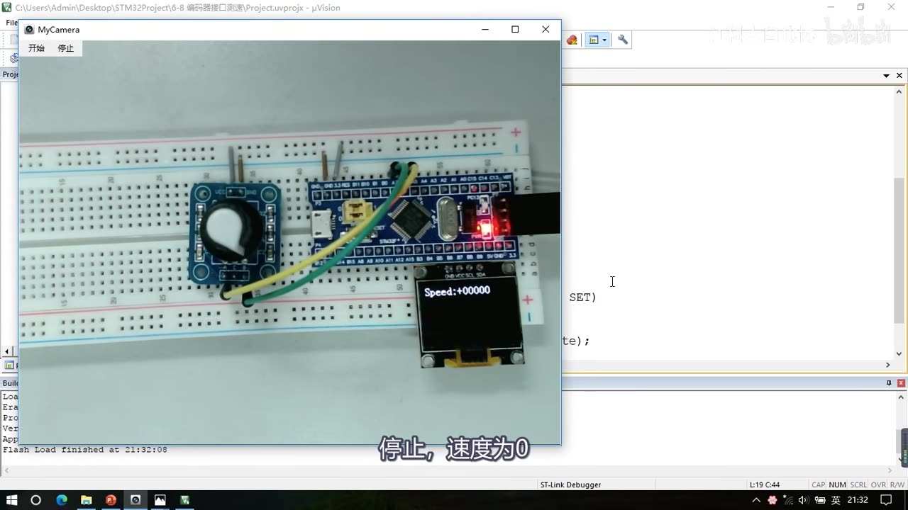
图 16：最终现象——OLED 显示 Speed:+00000（停止时速度为 0）；字幕「停止，速度为0」
坑与易错点
- 引脚只能用所选定时器的 CH1/CH2：本程序用 TIM3，所以 PA6（TIM3_CH1）/ PA7（TIM3_CH2）；换定时器要按引脚定义表接对应 TIM 的 CH1/CH2，PA6/PA7 本身不能随便换。
- A/B 两根线可以交换（A→PA7、B→PA6 也行），只改变正反转极性；
VCC/GND不能接反。 TIM_InternalClockConfig在编码器模式下没用（编码器接口托管时钟），最终代码里已经删掉；TIM_CounterMode也没有作用（方向被托管）——留着不报错，但别以为它管用。ARR给65536-1（满量程）：一是计数范围最大，二是方便把 16 位无符号数当有符号数、直接得到负数。PSC给1-1（不分频）：编码器的时钟直接驱动计数器，来一个边沿计一次；分频会降低分辨率。TIM_ICInit里只保留TIM_Channel和TIM_ICFilter：编码器接口只用通道 1/2 的滤波器和极性，其余参数（分频器、数据选择器）与编码器无关。- 极性重复配置大坑：
TIM_ICInit的极性与TIM_EncoderInterfaceConfig后两个参数是同一个寄存器，后配置覆盖前配置——所以要删掉TIM_ICInit的极性行，并保证TIM_EncoderInterfaceConfig写在TIM_ICInit之后（否则方向配置被覆盖）。 TIM_EncoderInterfaceConfig的模式参数一般用TIM_EncoderMode_TI12（TI1、TI2 都计数，两个边沿都计入，精度最高）；TI1/TI2是只在一个通道的边沿计数。- 编码器模式下
Rising/Falling不是「上升沿/下降沿有效」：而是**「不反相 / 反相」（高低电平极性）**——P19 讲过、本集代码也用来调方向。 - 改方向的三种办法：①A/B 两根线对调；②把任一通道极性从
Rising改成Falling；③换引脚——注意两个极性都反则方向不变。 Encoder_Get初版返回uint16_t：左转到 0 再减会溢出到 65535；要显示负数就改成int16_t（配合OLED_ShowSignedNum），这是借补码强转的技巧。- 测速必须先读后清零：
Temp = TIM_GetCounter(TIM3); TIM_SetCounter(TIM3, 0); return Temp;——顺序反了（先清零再读）就永远是 0；因为要先读后清零，所以需要Temp缓存。 - 闸门时间决定速度单位：
Delay_ms(1000)时速度单位是脉冲个数/s；本集没有 RPM/每圈脉冲数换算——想要 RPM 得自己乘系数（本集未讲）。 - 不要在主循环放长
Delay：会阻塞主循环；最终版改用 1s 定时中断在TIM2_IRQHandler里读速度、主循环只刷新显示。 - 中断里必须清标志位：
TIM_ClearITPendingBit(TIM2, TIM_IT_Update)，否则会反复进中断（P14 讲过）。 - 「一格=4 次计数」只对机械触点式编码器成立（它有段落感）；电机用的霍尔/光栅编码器没有段落感，计数取决于实际脉冲数，别拿「一格 4 次」套所有编码器。
- 本集无示波器：所有现象都是 OLED 数值 + 口述。
Timer_Init()的 1s 配置本集没展示：直接沿用6-1 定时器定时中断模板，写笔记/写代码时别自己编它的 PSC/ARR。
时间轴
| 时间 | 内容 |
|---|---|
| 0:02 | 开场：写编码器接口测速的代码 |
| 0:12 | 看接线图：和之前外部中断那一节的接线类似 |
| 0:14 | 旋转编码器插面包板左边；VCC/GND 接电源正负极 |
| 0:23 | A 相输出接 PA6、B 相输出接 PA7 |
| 0:30 | PA6/PA7 两个引脚可以交换（只改变正反转极性），但不能随便换成别的引脚 |
| 0:47 | 查引脚定义表：PA6、PA7 就是 TIM3 的通道 1、通道 2 |
| 0:55 | 计划用 TIM3 接编码器，所以接 PA6/PA7；其他定时器也要接对应 TIM 的 CH1/CH2 |
| 1:09 | 接线图确定；看面包板：编码器插面包板左边 |
| 1:27 | 跳线接电源：VCC 接电源正、GND 接电源负 |
| 1:39 | 两根飞线：A→PA6、B→PA7，接线完成 |
| 1:57 | 回工程文件夹：从定时器定时中断代码基础上写，改名 6-8 编码器接口测速 |
| 2:23 | 原代码先注释掉；定时中断部分也注释掉（等会儿还会用），先编译没问题 |
| 2:48 | 新建模块：Hardware 右键，名字 Encoder，路径加 \Hardware |
| 3:13 | 头文件固定部分、C 文件加 stm32 头文件，写 void Encoder_Init(void) |
| 3:30 | 看结构图理六步：①RCC ②GPIO 输入 ③时基 ④输入捕获 ⑤编码器接口模式 ⑥TIM_Cmd |
| 3:50 | 时基：预分频一般不分频、ARR 给最大 65535；输入捕获只有滤波器和极性有用 |
| 4:12 | 第五步配置编码器接口模式（调一个库函数）；最后 TIM_Cmd 启动 |
| 4:21 | 初始化后 CNT 随旋转自增自减：测位置直接读 CNT，测速度则固定闸门取 CNT 再清零（测频法） |
| 4:43 | 流程看完看库函数：打开 tim.h，本节只需新学 TIM_EncoderInterfaceConfig |
| 4:56 | 参数：定时器、编码器模式、通道1 极性、通道2 极性；其他函数不用了解 |
| 5:14 | 开始写代码：前面几步和之前代码基本一样，去输入捕获代码复制到 Encoder_Init |
| 5:44 | 第一步开时钟 TIM3、GPIOA，没问题 |
| 5:50 | 第二步 GPIO 初始化：用的是 PA6 和 PA7，GPIO_Pin 加个 GPIO_Pin_7 |
| 6:02 | 初始化 GPIOA，把 PA6、PA7 配置成上拉输入 |
| 6:08 | 输入模式选择原则：外部默认高→上拉、默认低→下拉 |
| 6:40 | 默认高是习惯状态，上拉用得比较多 |
| 6:46 | 不确定外部默认状态或信号功率小 → 浮空输入；浮空没有上下拉电阻影响外部信号 |
| 7:05 | 三种输入模式选择原则讲完 |
| 7:11 | 定时器内部时钟配置：编码器接口会托管时钟，所以这个内部时钟没用了 |
| 7:23 | 时基单元配置：计数器模式目前也没作用（方向托管） |
| 7:32 | ARR 还是给 65536-1，满量程计数、方便换算负数 |
| 7:42 | PSC 改成 1-1 不分频，编码器时钟直接驱动计数器；初始化 TIM3 |
| 7:55 | 下一步：输入捕获单元配置 |
| 8:00 | 看 PPT：输入捕获单元只用通道1/2 的滤波器和极性选择，只配这两部分 |
| 8:22 | 后面参数与编码器无关；删掉后结构体不完整 → 用 TIM_ICStructInit 赋初值 |
| 8:53 | 转定义看默认初始值；然后配通道1：滤波器 0xF、极性上升沿 |
| 9:09 | 上一小节说过：这里的上升沿不代表上升沿有效（编码器始终双沿有效），代表高低电平极性不反转 |
| 9:28 | 这个极性参数等会儿编码器接口配置也有，属于重复配置，等会儿再删 |
| 9:46 | 参数配好传给 ICInit 写入通道1；复制下面部分改成 Channel2，再 ICInit 写入通道2 |
| 9:59 | 整理逻辑：定义结构体→StructInit→改参数→ICInit；ICInit 后结构体可换值继续用 |
| 10:31 | 配置编码器接口：复制 TIM_EncoderInterfaceConfig，第一个参数 TIM3 |
| 10:49 | 转到定义：第二个参数编码器模式 TI1/TI2/TI12，对应 PPT 三种模式，一般用 TI12 |
| 11:16 | 后两个参数是 IC1、IC2 极性：Rising 不反相、Falling 反相；目前先选 Rising |
| 11:58 | 实际效果一样：这两个地方配置的是同一个寄存器，属于重复配置、后配置覆盖前面 |
| 12:00 | 所以把前面 ICInit 的极性参数删掉，只用后面函数配极性 |
| 12:15 | 但一定要保证 Encoder 函数在 ICInit 函数下面，否则被覆盖；ICInit 只剩滤波器有用 |
| 12:34 | 电路配置完成，最后 TIM_Cmd(TIM3, ENABLE)，初始化配置结束 |
| 12:50 | 调用 Encoder_Init，编码器旋转就能控制 CNT 自增自减；下面写 Get 函数 |
| 13:05 | uint16_t Encoder_Get(void) 暂时直接返回 CNT：return TIM_GetCounter(TIM3) |
| 13:17 | 两个函数都放头文件声明，回 main.c 测试 |
| 13:46 | 显示字符串改成 CNT，主循环解除注释不断 ShowNum，第 1 行第 5 列显示 Encoder_Get() |
| 14:05 | 编译下载 |
| 14:10 | 目前显示 CNT 是 0；向右转一下编码器，值变成 4 |
| 14:16 | 编码器有段落感：每转一格，A 相产生一个低电平脉冲、B 相产生相位差 90° 的脉冲 |
| 14:35 | 转动一格 A、B 各一个下降沿和上升沿 → 计次总共加了 4 次 |
| 14:44 | 电机编码器没有段落感，计数取决于实际脉冲 |
| 14:48 | 继续右转 CNT 自增、左转 CNT 自减，现象没问题 |
| 14:57 | 实验：向左转到 0 之后再左转，0 再自减、计数器反向溢出 |
| 15:09 | 回到自动重装值 65535，然后继续往下减 |
| 15:17 | 这是 uint16_t 数据的现象；想 0 之后变成 -1 就把 uint16_t 强转 int16_t |
| 15:28 | 可以直接把 ShowNum 改成 ShowSignedNum；或在 Get 里转换：返回值改 int16_t、声明也改 |
| 15:44 | 主循环改 ShowSignedNum，显示负数；右增左减、负数继续自减 |
| 16:08 | 借用补码特性快速完成负数转换的小技巧 |
| 16:15 | 再研究极性：目前向右转是增、向左转是减，方向不一致可以修改极性 |
| 16:25 | 把 A、B 相两根线换一下，增减方向就反过来 |
| 16:39 | 软件层面可修改两个输入通道的极性：任意一个反转方向就反过来，两个都反则不变 |
| 16:52 | 把第一个 Rising 改成 Falling，下载后极性反转过来了 |
| 17:11 | 目前代码是编码器测量位置；继续研究：把线、程序极性都改回来 |
| 17:30 | 想测速：固定闸门时间读一次 CNT 再清零；修改 Get 函数，定义临时变量 Temp |
| 17:50 | Temp = TIM_GetCounter 获取 CNT，TIM_SetCounter(TIM3, 0) 清零，最后 return Temp |
| 18:06 | 先读后清零，所以需要 Temp 缓存 |
| 18:15 | 主循环每隔一段时间 Get 一次 → 下面给一个 Delay_ms(1000) |
| 18:25 | 人手转得慢所以闸门 1s；电机飞速转闸门可以给短点 |
| 18:39 | 试一下：目前 CNT 的值代表速度，单位是脉冲个数/s |
| 18:48 | 向右慢速转正数小、快速转正数大；向左转负数小、快速转负数大 |
| 19:05 | 旋钮模拟测速的现象完成；有编码电机可实际接电机编码器试，闸门时间弄短点 |
| 19:15 | 目前是直接通过 Delay 实现闸门时间 |
| 19:25 | 主循环有其他东西时最好不要加过长 Delay（会阻塞主循环） |
| 19:41 | 比较好的方法是用留了这么久的定时中断：Timer_Init() 解除注释 |
| 19:50 | 定时中断目前每隔 1s 执行一次，可修改时间调整闸门；定义全局变量 Speed |
| 20:04 | 在定时中断里执行 Speed = Encoder_Get()，每隔 1s 读取一次速度 |
| 20:17 | 主循环就可以快速刷新显示 Speed，Delay 可以删掉，不会阻塞 |
| 20:25 | 前面的字符串改成 Speed；显示数字的位置往后挪两格、改到第 7 列 |
| 20:33 | 这样整个程序就完成了 |
| 20:44 | 现象：向右旋转正的速度、向左旋转负的速度 |
| 20:56 | 结尾：编码器接口测速的代码就写完了 |
存疑
- 本集文本来自画面硬字幕的 OCR（PP-OCRv4，source=subtitle-ocr，370 段），不是 ASR。Keil 输出污染严重：
Build Time Elapsed: 00:00:18、Load "C:\...\Project.axf"、Flash Load finished at ...、Programming Done.等行反复出现，不是口述内容；另有行首噪声（如1*、门等）。典型 OCR 错字（本集实际出现）：编码器接口→ 「编码器接回」、TIM_EncoderInterfaceConfig→ 「TlMEncoderlnterfaceConfig/TlmEncoderlnterfaceConfig」、TIM_ICStructInit→ 「TIMICStructlnit/Structlnit」、引脚→ 「引I脚」、比较→ 「此较」、uint16_t/int16_t→ 「uint16t/int16t」、Encoder_Init→ 「Encoder lnit」等，已按画面和上下文校正。 TIM_EncoderInterfaceConfig的第三/第四参数：f_00142（11:45）只显示到第三个参数，f_00145（12:00）才完整显示四个（…, TIM_EncoderMode_TI12, TIM_ICPolarity_Rising, TIM_ICPolarity_Rising）——本笔记以 f_00145 为准。- 定时中断的「1s」配置本集没有展示：
Timer_Init()沿用6-1 定时器定时中断模板，口述只说「定时中断目前是每隔 1s 执行一次」，没有出现 Timer.c 的 PSC/ARR 画面；本笔记只写「沿用模板的 1s 更新中断」，没有编 PSC/ARR（具体见 P14 笔记）。 - 速度没有换算成 RPM/圈速：本集速度单位是**「脉冲个数 / 秒」**，没有讲编码器每圈脉冲数、也没有乘系数；想要 RPM 要自己换算，本集未展开。
- 最终代码里
TIM_ICInit的极性行确实删掉了：f_00217（18:00）画面里 ICInit 只剩TIM_Channel和TIM_ICFilter；但视频里是「先配极性→讲坑→再删」的过程，本笔记给的是最终代码，过程见 3.5。 - 「一格 = 4 次计数」只对机械触点式编码器成立（有段落感）；电机霍尔/光栅编码器没有段落感，计数取决于实际脉冲（视频里也提到了）。
- 本集没有示波器画面：所有现象都是 OLED 数值（
CNT:00004、CNT:65520、CNT:-0013、Speed:+00000）+ 口述，没有波形实测。 - 片尾没有预告（模块 6 最后一集）：20:56「代码就写完了」直接结束，下一集是模块 7 的内容。
TIM_InternalClockConfig的去留：口述说它「没有用了」，最终代码里确实没出现这一行（f_00155 画面从 GPIO 直接到时基结构体）；本笔记按最终代码写「已删掉」，并说明「留着也不起作用」。